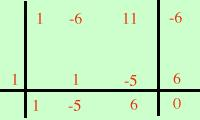

Pongo il denominatore diverso da zero x3 - 6x2 + 11x - 6 ≠ 0 Per scomporre il polinomio applico la scomposizione di Ruffini; cerco il divisore (x-1); P(1)= 1 - 6 + 11 - 6 = 0  Quindi (x-1) e' un divisore; eseguo la divisione di Ruffini ed ottengo x3 - 6x2 + 11x - 6 =(x-1)(x2-5x+6) essendovi nell'ultima parentesi un polinomio di secondo grado posso scomporre tramite la decomposizione del trinomio oppure mediante il trinomio notevole x2-5x+6 = (x-2)(x-3) e quindi ottengo x3 - 6x2 + 11x - 6 = (x-1)(x-2)(x-3) Quindi pongo (x-1)(x-2)(x-3) ≠ 0 ed ottengo x ≠ 1 x ≠ 2 x ≠ 3 C.E. = { x ∈ R / x ≠ 1, 2, 3 } |
|||